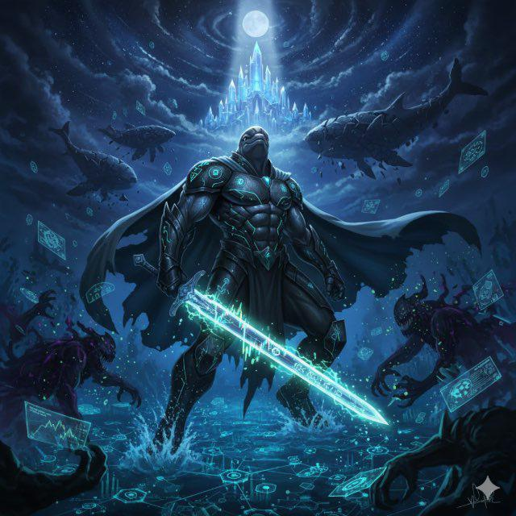
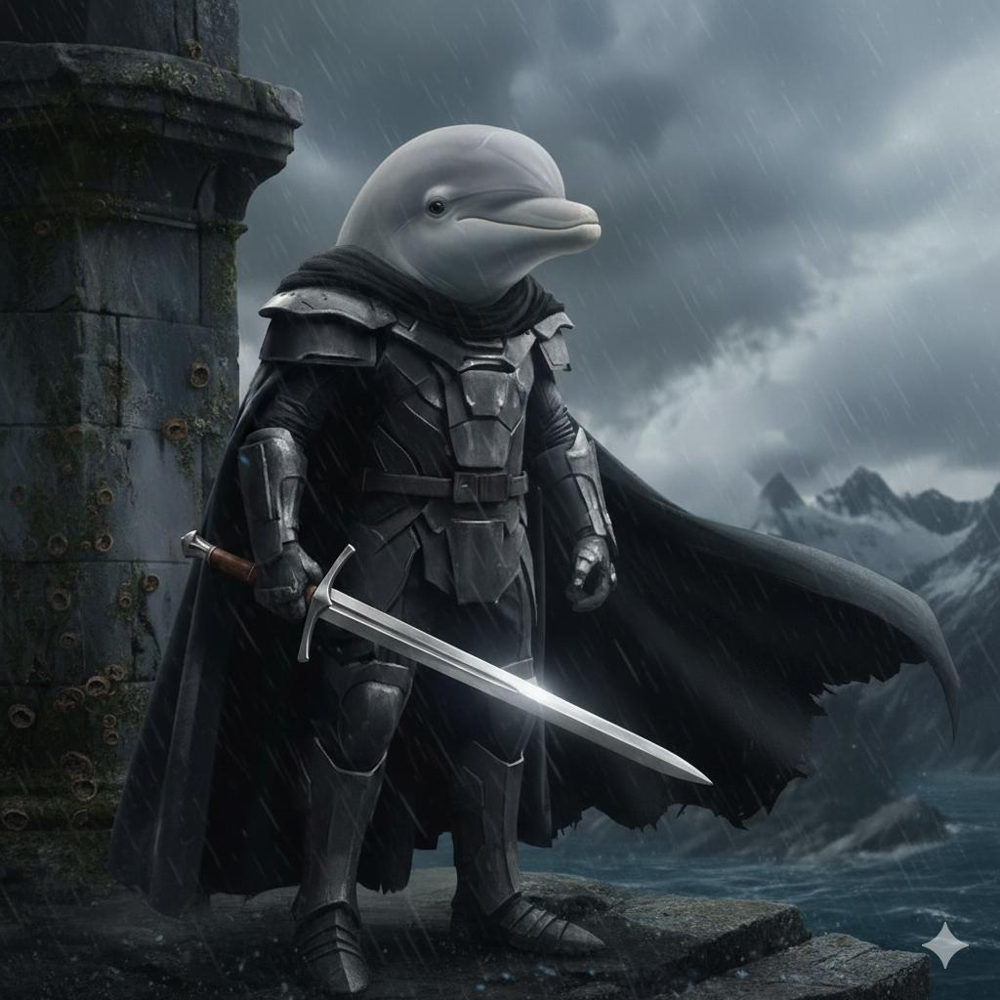

$TheBabyDolphinKnight The Community Memecoin
Narrative • Community Power • Early Movement


Narrative • Community Power • Early Movement
Built slowly. Built honestly. Built to last.
In a space driven by urgency and speculation, we choose patience, alignment, and trust.
Early supporters are builders shaping the ecosystem. We don’t build on noise, we build on substance.
In crypto, narratives create momentum -and momentum creates growth.
Holders
Market Cap
Total Supply
AI is one of the strongest narratives of this crypto cycle.
Built for the new generation of crypto users.
$TheBabyDolphinKnight was created as a response to noise. In a space driven by urgency, speculation, and short-term attention, this project takes a different approach: slow, intentional, and community-aligned growth. We don't build on noise we build on substance. If you are here early, you are here calmly.
To build a sustainable digital ecosystem where:
$TheBabyDolphinKnight is designed to evolve through cycles and not moments.
Full tokenomics to be published separately for clarity.
Holders may vote on major decisions, propose ecosystem upgrades, and influence treasury allocation. Decentralization is not rushed; it is earned.
Digital assets are volatile. Market conditions shift. No outcome is guaranteed. Participants should act responsibly and never allocate more than they are prepared to hold long-term. We build with conviction, not promises.
$TheBabyDolphinKnight is not a sprint. It is not noise. It is not pressure. It is alignment. Built slowly. Built honestly. Built to last. 🐬⚔️ Keep it bullishh.
You are still early. Join the community and shape the ecosystem from day one.